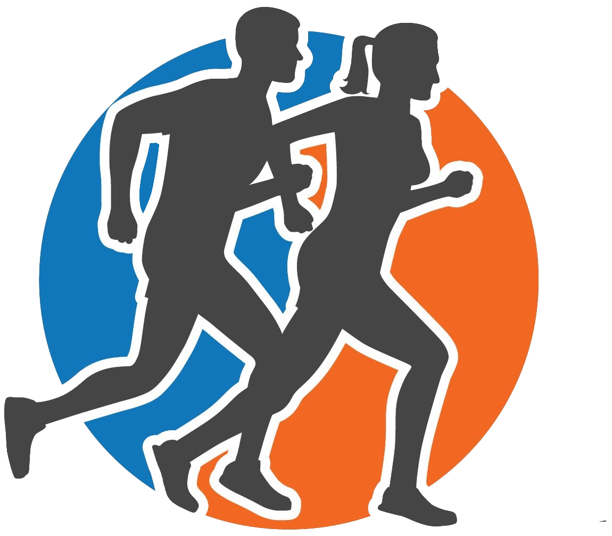

Podcast
Gallery
Stats
Bio
Podcast Episodes
Podcast Gallery
Podcast Sponsors
Mention the podcast and get 25% off of boarding up to three nights

Running Stats
Me
My Clubs
Bio
Max Cook interviews athletes and supporters of an active lifestyle in a casual and informative way, highlighting their personal stories. Tune in for funny and inspiring conversations with everyday athletes.
© The White Line Podcast. All Rights Reserved
Design by Tom